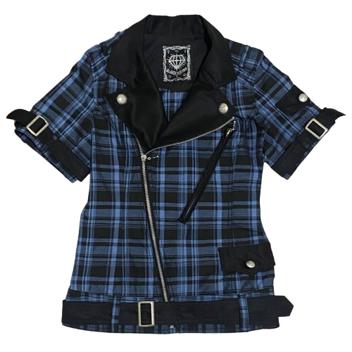

Check Rider's Jacket
|
 |
Brand:Algonquins Web Documentation:
|
2026.01.13A blue check jacket composed in polyester and rayon. She's decked in belts invoking both bondage and uk punkwear, the belt placement along with the cut of the jacket defining its modern Japanese touch. It also carries a zipper pocket to store its detachable sleeves in the front panel. This jacket technically has been instanced many times in the Kera magazine, but has varied so many times that I don't think I can include it until I get those jackets (missing or added cuff zippers, detachable hoods, etc.) There are several colorways dispersed online I want to wear, like the leopard print one and red check one. |